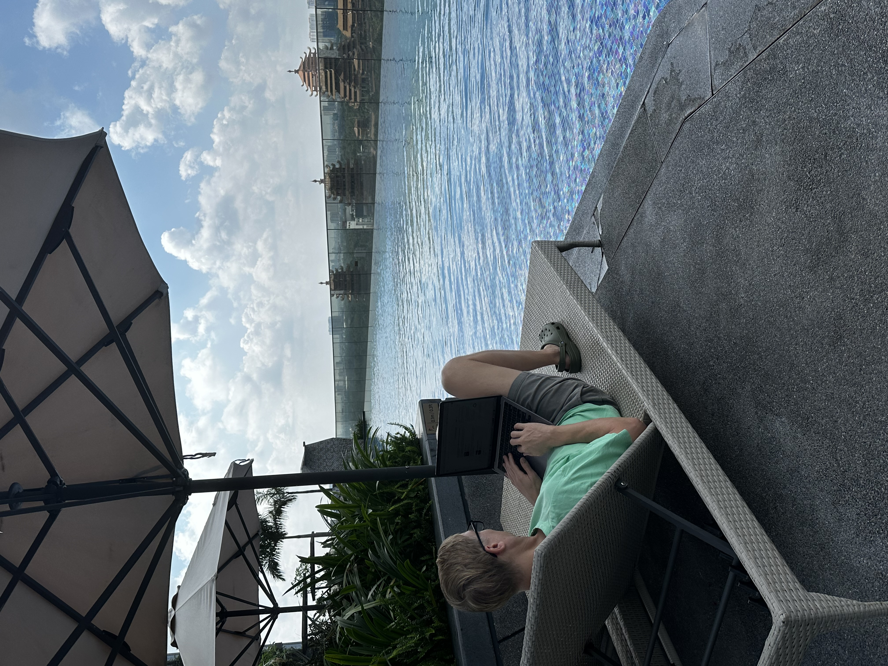

IDrive: Set It and Forget It Risk Management
A core principle of solid risk management is realizing that failure is inevitable. Hardware crashes, laptops are stolen, and data gets corrupted. The question isn't if it will happen, but how quickly you can recover when it does. If your backup strategy relies on you actively remembering to drag folders to an external drive, you are carrying unnecessary operational risk.

Silent Protection
I rely on IDrive to handle disaster recovery autonomously. It's not the flashiest software in the stack, and that is exactly why I love it. It does its job silently in the background.
- True Automation: You set your backup schedule once. From then on, IDrive quietly secures your data across multiple devices (PCs, Macs, servers, and mobile) directly to the cloud without needing any human intervention.
- Ransomware Defense: With historical snapshots, if your network gets hit by malware, you can simply roll back your systems to a clean state from the day before.
- One Account, Everything Covered: Instead of paying per device, IDrive allows you to backup unlimited devices into a single, massive cloud account, radically simplifying your overhead.
Intentional Operations
Peace of mind is the ultimate ROI. Knowing that every document, codebase, and asset is automatically mirrored off-site means I can shut my laptop at the end of the day and be completely present, knowing the foundation is secure.